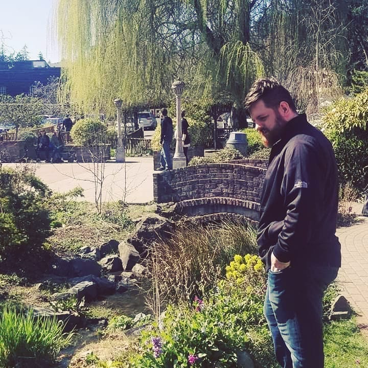
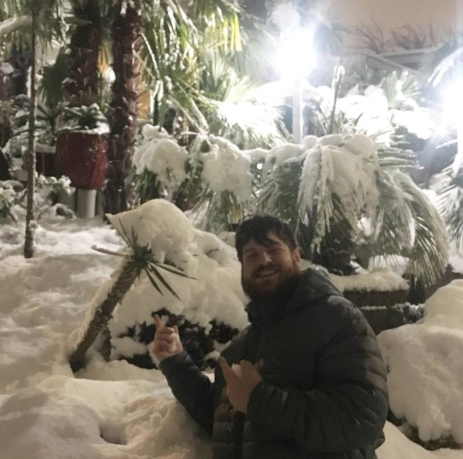
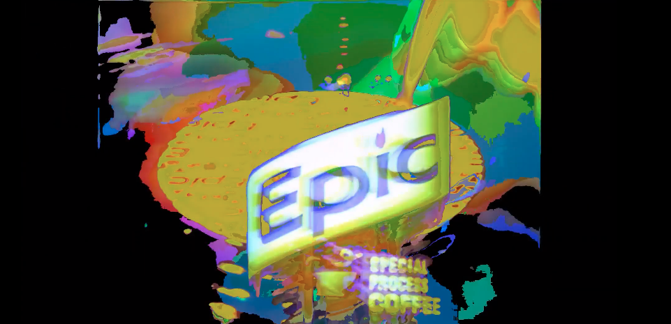

- The Guessing Game
- Do I love cats?
- Am I a native Seattleite?
- Have I played Lacross?
- Have I climbed Mt Rainier?
- Do I like dessert?
- Do I prefer compiled languages?
- How many nations have I visited?


- Biographical Information
- Grew up in the Pacific Northwest
- ROTC Cadet at Gonzaga University
- Afghanistan Campaign 101st Airborne
- Electronic Music
- New Media Artist
- Tech Entrepeneur
I do love cats, I foster one cat currently. I grew up in north Seattle. I didn't play lacrosse, rather I played rugby. I haven't climbed Mount Rainier though some of my friends have. I don't like sweets, I own seven synths and samplers, and I've been all over the world.
- Technical and Artistic Career Goals
- Convert to a SDE next year
- Launch my own Record Label
- Play at the Showbox
- Play at the Moore
- Collaborate professionally with Eric Copeland or Danny Perez
- Launch A Crisis Response Application tailored to workplaces and communities
- Perform at the Gorge
- Masters in Computer Science
- Grow the music scene in Seattle to incorporate changing demographics
- Collaborate and design an Audiovisual Venue in Seattle
